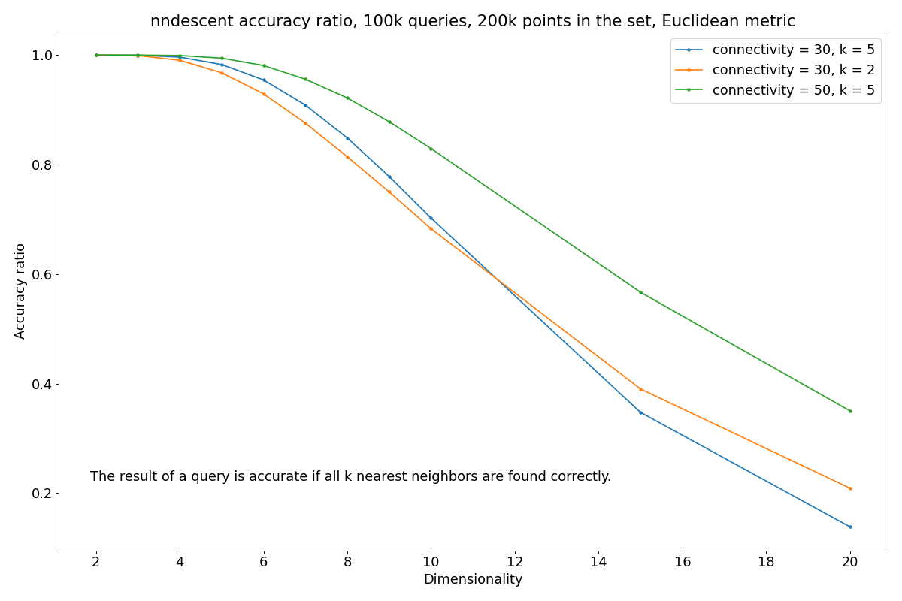
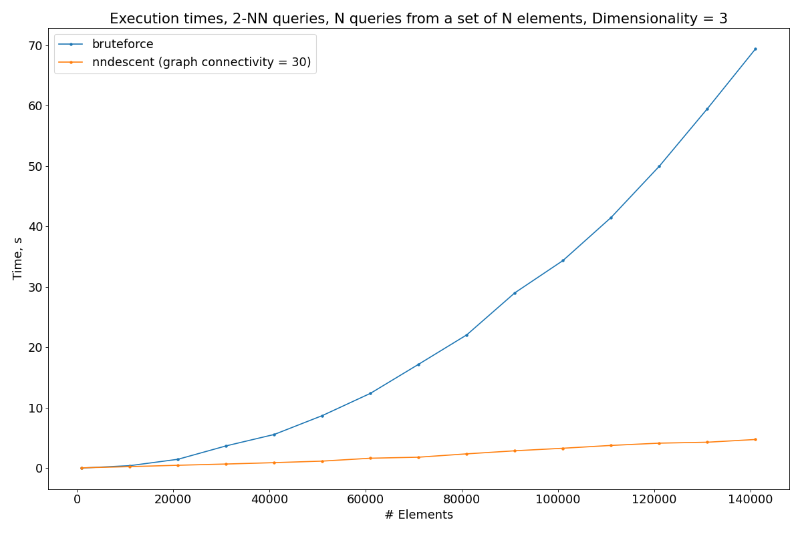

Overview
nndescent is an algorithm for approximate k-NN searches. Although I
wanted to make a replacement for pynndescent and failed(UPD: nope,
this implementation has accuracy comparable to pynndescent's), this
implementation is still good for low dimensionality. Look at this plot:

As you can see, the accuracy is more than 90% for dimensionality up to 6, and is about 99,8% for dimensionality equal to 3.The algorithm gives a significant speed-up compared to a brute-force solution:

As you can see, the brute-force algorithm has the complexity \(O(n^2)\) and nndescent is roughly \(O(n)\).Paper:
Dong W., Moses C., Li K. Efficient k-nearest neighbor graph construction for
generic similarity measures //Proceedings of the 20th international conference
on World wide web. – 2011. – С. 577-586.